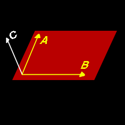
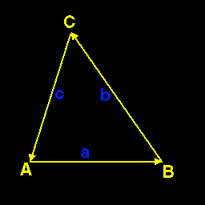

|
Calculating Normals
Question submitted by (23 July 1999)

|
 |
|
 |
| |
Does anyone know of a practical computer graphics book that explains the
underlying maths understandably? I'm relatively new to graphics programming
and the books I have seem to explain everything but what I need. The
problem that I have is how to calculate the normal of a face given three
vectors. Sorry if the question seems nieve, but if when you can't find
somthing out yourself things grin to an abrupt halt.
|
|
 |
|
 |
 |
|
|
| |
Vector maths are actually pretty simple once you get the hang of them. For
me, the trick was to be able to visualize them. This extends nicely into
matrices, since the standard rotational matrix (3x3) is simply three
vectors (one for the X axis, one for the Y axis and one for the Z axis.)
As for your immediate problem (calculating the normal of a polygon given
three vertices) the answer is quite simple. You perform a cross-product
of two "edge vectors." Don't run away just yet, I'm about to explain this
in simpler terms.
A cross product of two vectors returns another vector. The unique property
about the cross product, is that it returns the normal of the plane that
is
defined by the two input vectors.

In Figure 1, the vectors A & B define a plane in 3-space. These vectors
were drawn such that they meet at a center axis, but this really isn't
necessary, it just makes for prettier artwork (if you can call it that.)
By performing a cross-product on them, you end up with vector C. Here's
what a cross-product looks like:
C.x = (A.y * B.z) - (A.z * B.y);
C.y = (A.z * B.x) - (A.x * B.z);
C.z = (A.x * B.y) - (A.y * a.x);
|
A triangle is usually defined by three vertices. These vertices are all
connected together by edges. But you can think of each of these edges as
a vector:

In the above figure, edge a is defined by the subtraction of vertex B from
vertex A, therefore the subtraction of any two points results in a vector.
If you continue the chain around the polygon, you end up with three 'edge
vectors.' This subtraction is very simple:
v.x = point2.x - point1.x;
v.y = point2.y - point1.y;
v.z = point2.z - point1.z;
|
The order of the subtraction determines the signed direction of the
vector.
By now, you've probably already put it all together, but I'll conclude
anyway. By subtracting vertex B from vertex A to get one vector, then
subtract vertex C from vertex B to get the second vector, you have the
information required for a cross product.
After performing the cross product, you'll have a vector that defines the surface
normal. You will probably want to normalize this resulting normal vector.
A vector normalization looks like this:
double vectorLength = sqrt(v.x * v.x + v.y * v.y + v.z * v.z);
v.x /= length;
v.y /= length;
v.z /= length;
|
The vector length is much like calculating the length of a line. However,
rather than having two end-points, a vector has only a single point. You
can consider that point to be the second end-point, with the first
end-point at the origin (0,0,0). Given that, you can see that you don't
need the subtraction of the first point, since subtracting zero is
useless. By dividing each element in the vector by it's length, you end up
with a unit vector (a vector whose length is 1.0). Anything divided its
length is 1.0.
Response provided by Paul Nettle
|
|
|
|
|
This article was originally an entry in flipCode's Fountain of Knowledge, an open Question and Answer column that no longer exists.
|